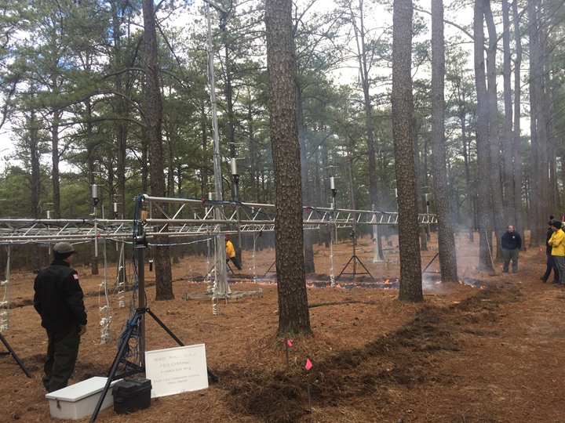
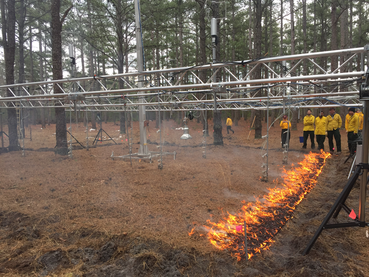
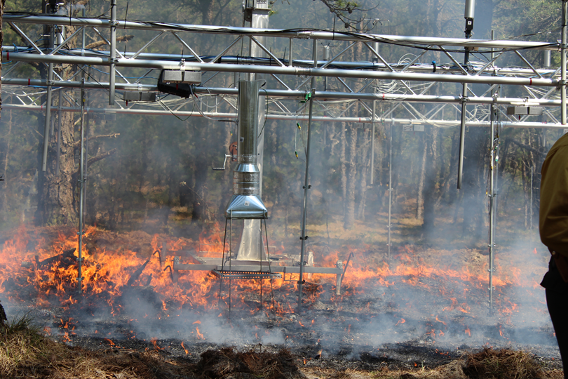
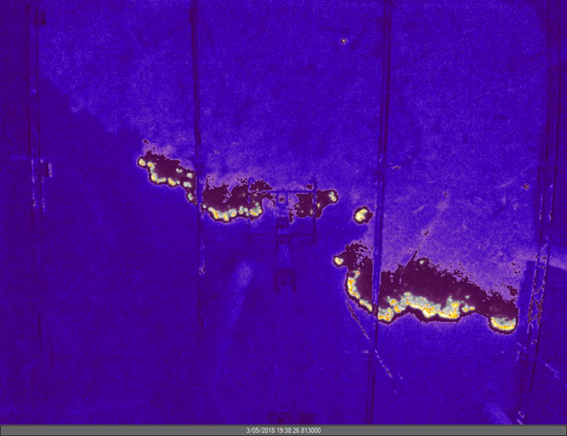
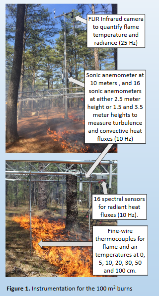

| MICHIGAN STATE U N I V E R S I T Y |
TOWARDS IMPROVED UNDERSTANDING OF FIRE-ATMOSPHERE INTERACTIONS THROUGH DATA ANALYSES AND NUMREICAL MODELING OF PRESCRIBED BURN EXPERIMENTS |





Photo credits: Nick Skowronski, USDA Forest Service, Northern Research Station
Many DoD facilities throughout the eastern United States utilize low intensity prescribed fire to manage hazardous fuels, restore ecological characteristics and historic fire regimes, and encourage the recovery of threatened and endangered species in the forests they manage. Current predictive models used to simulate fire behavior during low-intensity prescribed fires (and wildfires) are empirically-based, simplistic, and often fail to adequately capture variability in fuel characteristics and interactions with important meteorological processes. The SERDP fire project utilizes a suite of measurements at the fuel particle, fuel bed, field plot, and stand scales to quantify how variability in fuel characteristics and key meteorological factors interact to drive fire behavior during low intensity prescribed burns. These experiments are designed to provide information for the further development and evaluation of mechanistic, physics-based models that explicitly account for combustion, turbulent transfer, and energy exchange by coupling and scaling individual component processes. These will improve our understanding of and ability to accurately predict fire behavior under a wide range of management scenarios.
The work conducted by our team at MSU, in collaboration with several other scientists on the SERDP fire project, will help address objectives 3 and 4. Specifically, we will:
Dr. Sharon Zhong |
Dr. Mike Kiefer |
Mrs. McKenzie Kulseth |
Mr. Joseph Seith |
Ms. Ting (Diane) Wang |
Mr. Marshall Stageburg |
Dr. Warren Heilman |
Dr. Joseph Charney |
Mr. Xindi Bian | Dr. Nicholas Skowronski |
Dr. Kenneth Clark |
Dr. Tirtha Banerjee |
Dr. Craig Clements |
Kiefer, M.T., W.E. Heilman, S. Zhong, J.J. Charney, X. Bian, N.S. Skowronksi, K.L.
Clark, M.R. Gallagher, J.L. Hom, and M. Patterson, 2019: Use of a high-resolution
atmospheric model for pre-burn instrumentation deployment guidance. 6th Fire Behavior
and Fuels Conference, 29 Apr – 3 May 2019, Albuquerque, NM, USA.
Abstract
Presentation
Kiefer, M.T., 2018: Management-scale atmospheric modeling: Exploring fire-induced turbulent
flows in forested environments. North Atlantic Fire Science Exchange SERDP Webinar Series,
8 Aug 2018.
Abstract
Presentation